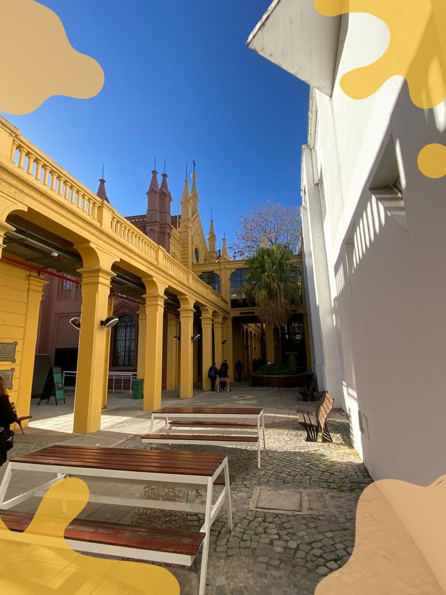
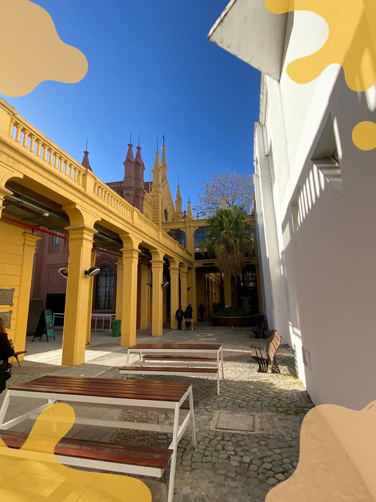
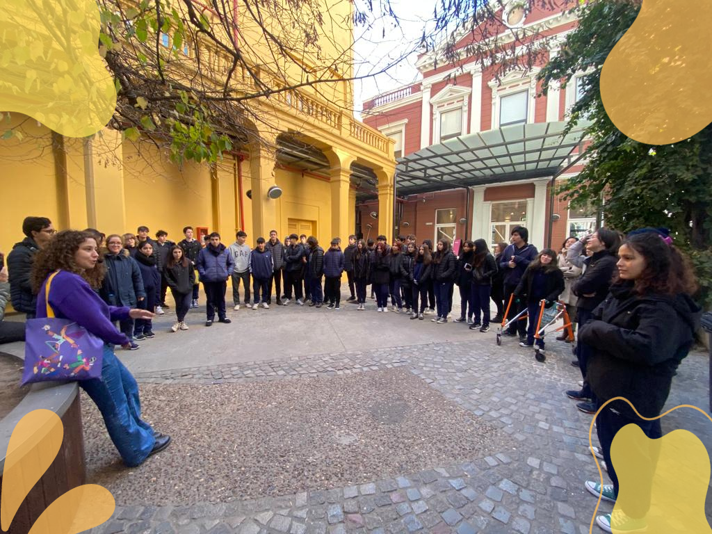

Centro Cultural Recoleta 3A
Por: Mora Moline 3A
El día Miércoles 14 de junio los alumnos de 3A y 3B fuimos a visitar y conocer el Centro Cultural Recoleta. Los profesores que nos acompañaron en esta experiencia fueron María Ana Rago, Claudia Iarlori y Griselda Orellano.
 

Ingresamos al lugar a las 9:17 de la mañana. Allí nos recibió cálidamente Miranda, nuestra guía durante toda la experiencia.
Tuvimos la oportunidad de recorrer el centro vacio, ya que abre de martes a domingo de 10:30 hasta las 22hs.
La entrada a este centro es libre y gratuita. El primer lugar que recorrimos fue la sala de dibujo. Alli ya había materiales para utilizar,
mesas especiales para calcar. Luego fuimos a la sala de estudio y trabajo. Había wifi gratis y lugares para cargar los dispositivos. Se veía muy tranquilo y silencioso.
Fuimos al patio de los naranjos, lo curioso es que los arboles no son naranjos, sino pomelos.
El lugar se llama así debido a que en 1980 hubo una reforma. El que compro los árboles,compro erróneamente pomelos en lugar de naranjos.
Alli Miranda nos hablo un poco del origen de este lugar. Se construyó en la época colonial al igual que el Cabildo y tenia la función
de ser un convento y vivian los monjes recoletos. Estos monjes luego de mucho tiempo lo abandonan y ahí se convierte en propiedad
del Estado y en 1980 se inagura como centro cultural.
El cuarto lugar recorrido fue el Site Specific, debido a como da la luz para generar una especie de prisma, dando la ilusión de que hay luces de colores basadas en los movimientos del sol. Alli se hacen silent partys (fiestas en silenco) cada uno reproduce su música en auriculares.
A continuación fuimos al patio con estilo callejero como por ejemplo, grafitis. Hablamos un poco de la cultura del rap y estilos similares. Hablo de un proyecto llamado Clave 13-17: una experiencia para jóvenes entre 13 y 17 años totalmente gratis. Alli hay encuentros y actividades de cine, arte, danza, entre otras.
Ya casi terminando fuimos a una sala de pura gráfica, una muestra. Había técnicas artesanales y manuales. Fue uno de los lugares preferidos de los alumnos, era muy colorido y nos atraparon las pinturas y gráficos que habían.
Por último fuimos a otra sala arística en la que había de todo un poco. Había esculturas, imágenes con movimiento y videos que buscaban transmitirnos emociones, entre otras cosas.
